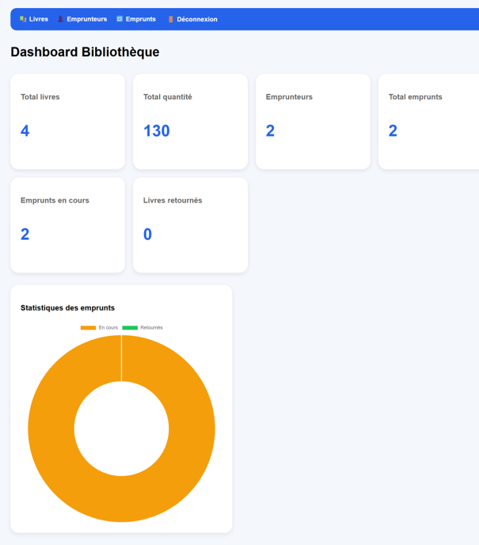
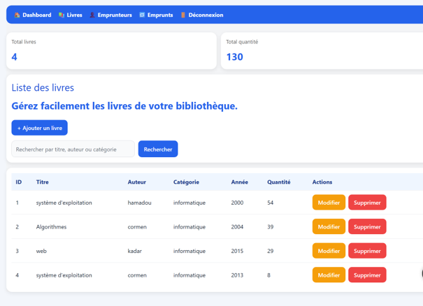
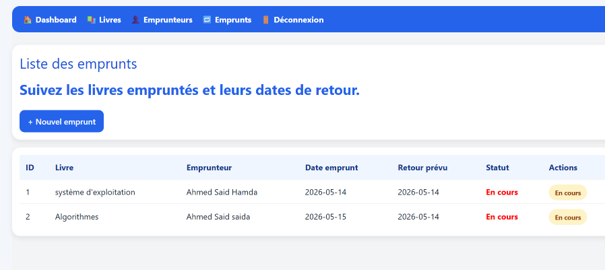

Étudiante en Informatique |
Projet de poursuite d'études en Master
Étudiante en informatique, je réalise différents projets
académiques et personnels afin de consolider mes compétences
en programmation, développement web, bases de données,
réseaux et analyse de données.
Ce portfolio présente mon parcours, mes compétences et mes
réalisations dans le cadre de mon projet de poursuite
d'études en Master Informatique en France.
💻 Développement Web📊 Analyse de données🗄️ Bases de données🌐 Systèmes & Réseaux
Je suis étudiante en informatique à l'Université de Djibouti.
Mon parcours universitaire m'a permis d'acquérir des
connaissances en programmation, développement web,
bases de données, systèmes et réseaux.
Afin de compléter les connaissances acquises pendant ma
formation, je réalise également des projets personnels
qui me permettent de mettre en pratique les notions étudiées
et d'apprendre de nouvelles technologies.
Je souhaite poursuivre mes études supérieures en France afin
d'approfondir mes connaissances en informatique,
développer des compétences techniques plus avancées et
construire progressivement mon projet professionnel.
Parcours académique
Licence en Informatique — en cours
Université de Djibouti
Septembre 2024 — Mai 2027 prévu
Formation couvrant notamment la programmation,
le développement d'applications, les bases de données,
les systèmes et les réseaux informatiques.
Linux, réseaux informatiques,
configuration et diagnostic réseau
Outils
Git, GitHub, Postman, WampServer
Projets réalisés
DjibJob — Plateforme de recrutement en ligne
Conception et développement d'une plateforme web
permettant de mettre en relation les candidats
et les entreprises.
L'application permet notamment de gérer les comptes,
les profils candidats, les entreprises, les offres
d'emploi, les candidatures et un espace administrateur.
Ce projet m'a permis de travailler sur le développement
frontend et backend, la création d'une API REST,
l'authentification, la gestion des rôles et
l'utilisation d'une base de données MySQL.
Développement d'une application web permettant
de gérer les principales opérations
d'une bibliothèque.
L'application permet notamment de gérer
les livres, les emprunteurs, les emprunts
et les retours, avec un tableau de bord
et un système d'authentification.
Ce projet m'a permis d'approfondir mes compétences
en PHP, Laravel, architecture MVC,
bases de données et développement web.

Tableau de bord

Gestion des livres

Gestion des emprunts
Technologies :
PHP • Laravel • MySQL • Blade •
HTML • CSS • Git • GitHub
Réalisation d'un projet d'analyse de données
portant sur un jeu de données d'offres d'emploi.
L'analyse étudie les postes, les entreprises,
les villes et les salaires à travers des statistiques,
des classements et plusieurs visualisations.
Ce projet m'a permis de mettre en pratique
la manipulation de données avec Pandas,
les statistiques descriptives et la création
de graphiques avec Matplotlib.
Mon objectif est de poursuivre mes études en
Master Informatique en France
après ma Licence.
Je souhaite intégrer une formation qui me permettra
d'approfondir les connaissances acquises pendant
mon parcours universitaire et de développer
des compétences techniques plus avancées.
Mon intérêt porte notamment sur le développement
d'applications, les technologies informatiques,
les données, les systèmes et les réseaux.
Les projets présentés dans ce portfolio illustrent
ma volonté de mettre en pratique mes connaissances,
de développer mon autonomie et de progresser
continuellement dans le domaine informatique.